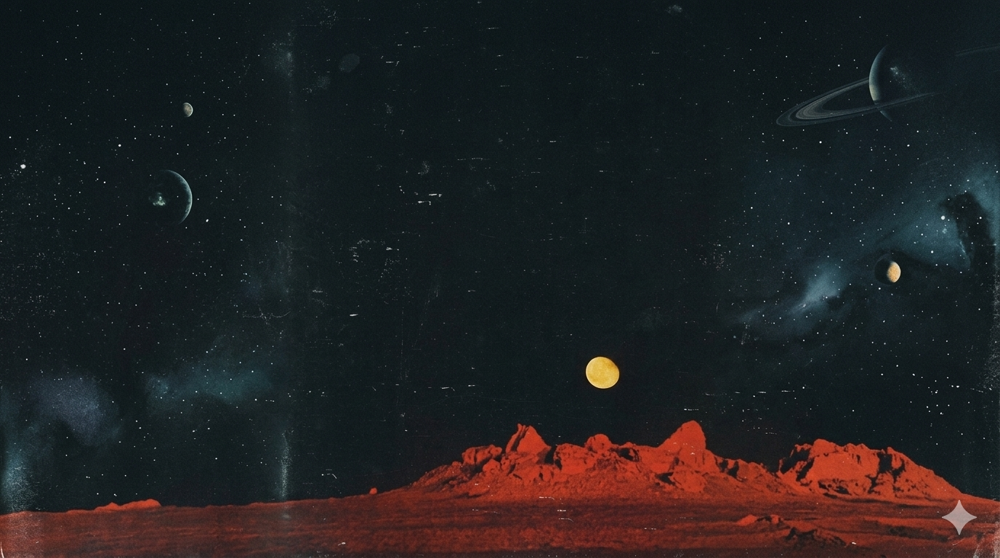
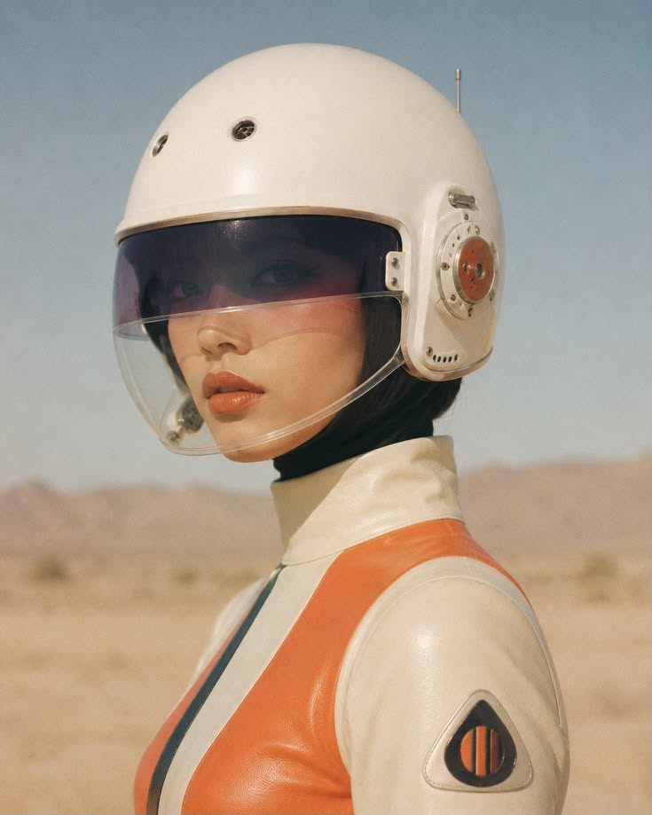
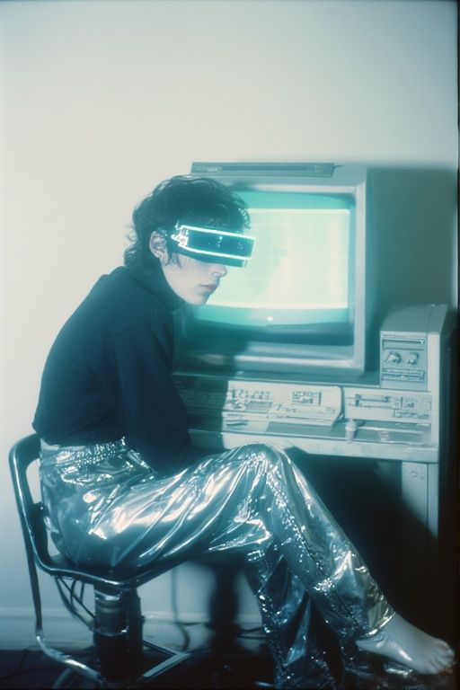

01 / 03
Clínica Sorria
Landing Page focada em conversão, criada para apresentar serviços e facilitar o agendamento de novos pacientes.
Ver projeto
Gran Rey Cero
Web Design & Development
O que podemos construir
Landing pages, sites institucionais e catálogos digitais e serviços de automação feitos para apresentar o que você oferece e facilitar o próximo contato.
PROJETOS SELECIONADOS
Cada projeto combina estrutura, direção visual e desenvolvimento responsivo para ajudar marcas e pequenos negócios a se apresentarem melhor online.
01 / 03
Landing Page focada em conversão, criada para apresentar serviços e facilitar o agendamento de novos pacientes.
Ver projeto
02 / 03
Site institucional para negócios, desenvolvido para organizar informações, transmitir confiança e mostrar aos pacientes como iniciar o atendimento.
Ver projeto
03 / 03
Catálogo digital para marca, criado para destacar produtos, apresentar a identidade da marca e facilitar o contato de pessoas interessadas.
Ver projetoO QUE FAZEMOS
Escolha o formato que melhor atende ao seu momento: uma página focada em conversão, um site completo para apresentar sua empresa ou um catálogo digital para organizar produtos e serviços.

Já sabe qual estrutura seu negócio precisa?
Solicitar orçamento
SOBRE MIM
Sou Caio Martins, Web Designer e desenvolvedor por trás da Gran Rey Cero Studio. Crio landing pages, sites institucionais e catálogos digitais para pequenos negócios que precisam apresentar melhor seus serviços, transmitir confiança e facilitar o contato com novos clientes.
Meu trabalho combina direção visual, estrutura de conteúdo e desenvolvimento responsivo. O objetivo não é apenas criar uma página bonita, mas construir uma presença digital clara, funcional e coerente com o negócio.
Vamos conversarCONTATO
Conte um pouco sobre o seu negócio, o que você precisa apresentar e qual resultado espera alcançar. A partir disso, podemos definir a melhor estrutura para o projeto.
Falar pelo WhatsApp